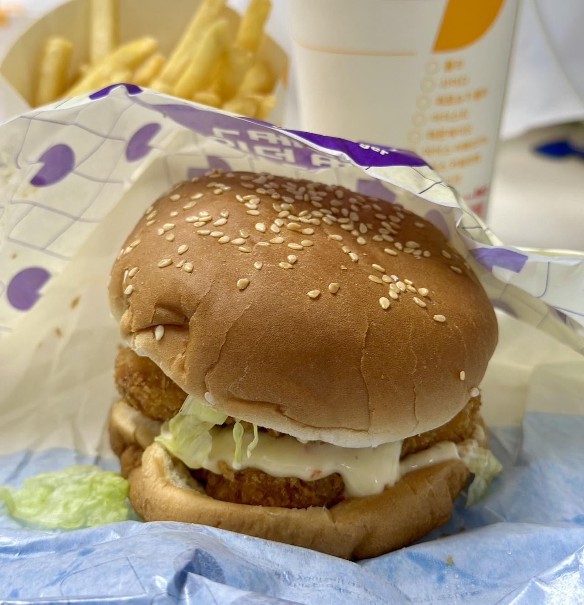

롯데리아의 리아 사각새우 더블 버거에 관한 기록
햄버거 매니아로써 점심 시간에 혼자 있게 되면 역시나 햄버거를 고르게 되는 경우가 태반인 듯하다. 역시나 어디서나 가까이서 찾아볼 수 있는 롯데리아는 이럴 때는 참 좋은 친구...는 아니지만 그나마 옆에 있어주는 모르는 아저씨 수준은 되는 것 같다.
뭐 하여간 마침 점심시간에 혼자가 되었기에 롯데리아에서 지금껏 먹어보지 못한 메뉴에 도전해 보기로 했다. 바로 '리아 사각새우 더블'버거 세트다. 이번에도 배달이 아니라 직접 테이크아웃 했다. 한 푼이라도 아껴야 하니 말이다.
 나름 번이 잘 보존(?)된 리아 사각새우 더블 버거
바로 본론으로 들어가보자.
맛은 역시나 롯데리아의 새우패티가 강렬하다. 잘 알려졌다 시피 새우만 있는 게 아니고 대구 살 등 여러 살이 섞여서 만들어진 패티다. 개인적으로 따끈따끈하게 막 데운 롯데리아의 새우 패티는 좋아하는 편이었지만 너무 과하면 그것도 문제가 되는 것 같다. 솔직히 말해서 패티 맛이 너무 과하다. 그것만 제외하면 그냥 롯데리아의 햄버거 맛이었던 것 같다.
식감 평가에서 보통 더블 패티는 평가를 좋지 않게 하는 편이었지만 그나마 이 버거는 패티 두 장의 식감이 그리 나쁘지는 않았다. 나름 새우가 탱글탱글하게 씹히는 듯한 느낌적인 느낌이 조금이나마 있고 이게 바삭한 튀김 식감과 함께 어우려져 기분 좋은 식감을 내기도 하니 말이다.
결론
개인적으로 리아 사각새우 더블 버거를 다시 시켜 먹을 가능성은 거의 없을 것 같다.
역시 자주 먹던 거나 먹는 게 정답일 지도 모르겠다. 그 맛과 식감이 아무래도 기준이 될 수밖에 없으니 말이다. 그나마 나쁘지 않은 패티 식감이긴 하지만 아무래도 맛의 밸런스가 과하게 흐트러진 느낌은 좋게 넘기긴 힘들 것 같다.
물론 배고파서 패티 두 장짜리를 먹어야겠다면 말릴 이유는 없을 것 같긴 하다. 먹을 만한 수준이니 말이다.